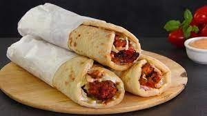

Shawarma

Description :
Shawarma is a popular dish originating from the Middle East. It’s a popular street food that is traditionally made in the form of spiced meats that are stacked on a vertical rotisserie with thin slices shaved off as it rotates. But don’t worry! We can cook our horizontally in a good old pan or on the BBQ!
Shawarma was traditionally made with lamb, mutton and chicken though these days you see it with beef too. It’s commonly served in the form of a wrap, though in some countries you see it served on plates with sides such as seasoned rice or fries, and salads
Ingredients :
- Chicken
- Lemon Juice
- Olive Oil
- Spices
Steps :
- Mix marinade - For convenience, just mix the marinade directly in a ziplock bag. A bag works best because the chicken remains nicely coated in the marinade. If you prefer to use a container, either turn the chicken a few times or increase the marinade by 50%.
- Add chicken into the marinade. Seal the bag, removing excess air, then massage to coat from the outside. Leave to marinade for 12 to 24 hours in the fridge. If you’re pressed for time, even 3 hours will do!
- Yogurt sauce – Make the yogurt sauce simply by mixing the ingredients then set aside for at least 20 minutes to let the flavours meld. This will keep for 3 days in the fridge.
- Cook chicken either on the stove or on the BBQ. It will get a great crust on it from the spices, and you will adore the smell. It’s intoxicating!
- Rest chicken for at least 3 minutes before serving to allow the juices to redistribute throughout the flesh, else they will just run out everywhere when you slice the meat.
- To serve, just pile everything on a platter and let everybody make their own wraps! The chicken, lettuce, tomato slices, onion, yogurt sauce and warmed flatbreads – homemade or store bought. If the chicken is on the larger side, I sometimes slice it. But if they are smaller, I tend to just leave them whole.
Home